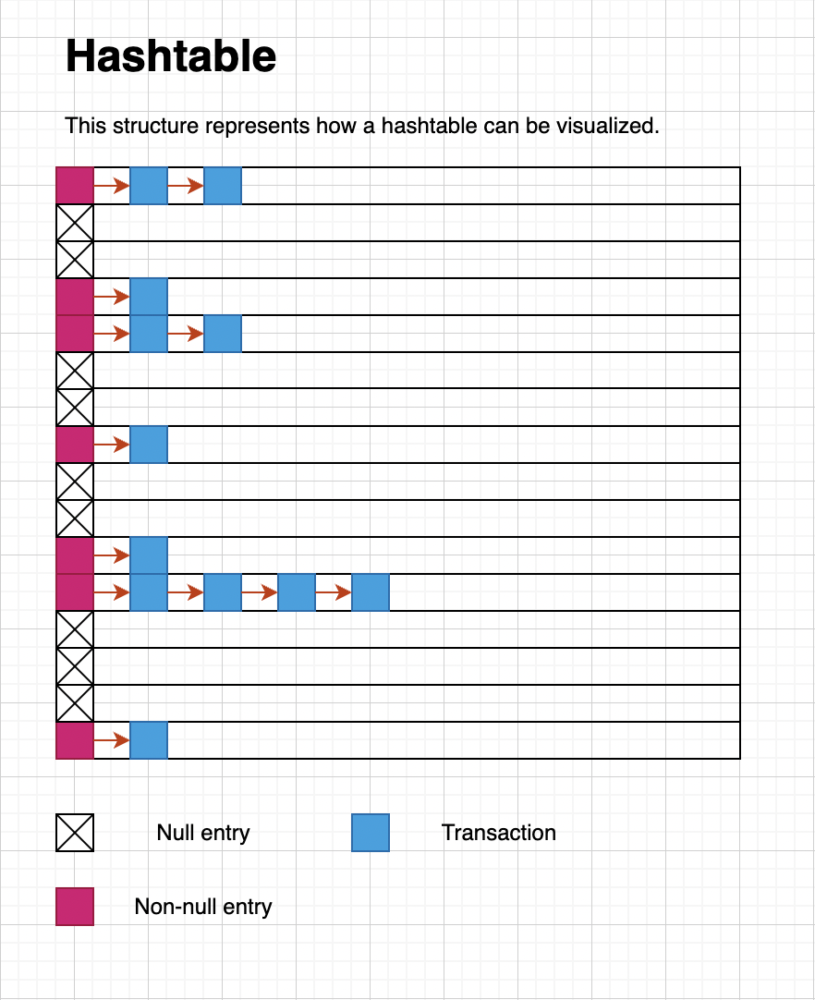

Locking Scheme Outline
The purpose of this locking scheme is to synchronize access to certain locations on secondary storage, for example, a portion of a file. The scheme for this project involves several data structures, some of them thread safe, and the usage of several synchronization primitives from the PTHREADS library as defined by the POSIX standard. The data structures required are as follows:
- A priority queue. This priority queue is implemented as a binary heap, which is one of the most effective ways to implement a priority queue. This structure holds a queue of transactions. Transactions are opaque data structures and nothing should be assumed about them, except that each transaction always has a timestamp field of type time_t (a standard UNIX timestamp) from the LIBC header file time.h. The priority queue makes sure that the order in which the transactions are placed in is a minimum order, that is, the transactions are given higher priority the lower their timestamp field is. This queue is explicitly not thread safe, but it is protected by a wrapper data structure which is thread safe.
-
A hash table. This hash table is implemented as an array of
linked-lists with separate chaining. The hash table depends on the C
library primesieve.h to generate prime numbers used to
initially size and also resize the table. This hash table is
protected by a mutual exclusion lock (mutex) of type
pthread_mutex_tfrom the pthread.h header. file.  There are three important parts of the diagram: the non-null entries, the transactions, and the null entries. Each is explained below:- Transactions represent operations queued to the database. For example, a search, insert, or delete. Although the transactions appear to be linked together in a list, they are actually all in a binary heap which, as mentioned above, serves as the priority queue. The internal logic of the heap controls how transactions are neatly removed in a way that resembles a linked list. As stated above, the transactions are ordered by their unique UNIX timestamp.
-
The non-null entries are keys in the hash table. Each non-null
entry contains the following (in this implementation). A mutex,
(represented by a
pthread_mutex_tstructure), a pointer to a priority queue, and a thread which loops forever, taking items off the queue, locking the mutex if needed, performing the operation, and waiting for new operations. If there is no operation in the queue, and the thread is idle, the entry is destroyed and set to null. - The null entries represent an empty entry in the hash table. If a page is hashed and that corresponds to an index at which there is a null entry, a new non-null entry is created with all the required elements as mentioned before (the thread, lock, heap, etc.). When the thread running for that particular entry detects that there is no more work to do, the entry is turned back into a null entry for reuse later.
- The hash table is initialized with no entries and a default size of 613 (a prime number)
- A task is created which requires the locking of a page on the disk.
- The page number and metadata of the page to be locked is hashed into an integer modulus the size of the hash table.
-
Now the paths diverge
- If the entry was null, then a new entry is created with this task being the only one in the queue. A thread begins to run which takes this task off the queue and checks if there are any more tasks to be done (if any had been assigned in the time the thread was busy working on the operation). If there are more tasks, the thread continues taking those tasks in order, and if not, the entry is converted back into a null entry, the thread is freed, and the lock is destroyed.
- If the entry was not null, the caller acquires a lock on the hash table and inserts an entry into the priority queue corresponding to that entry. It is taken off the queue, processed, and the results returned to the caller (if any results existed).